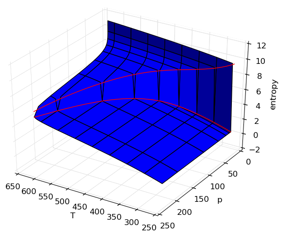
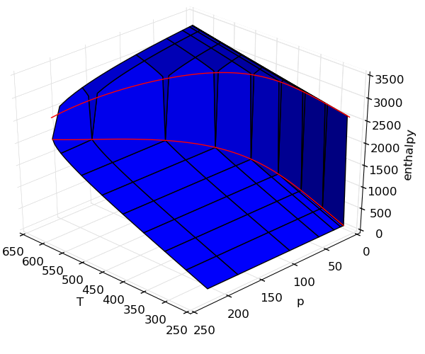
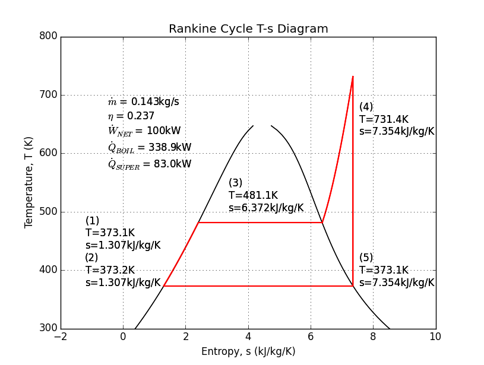
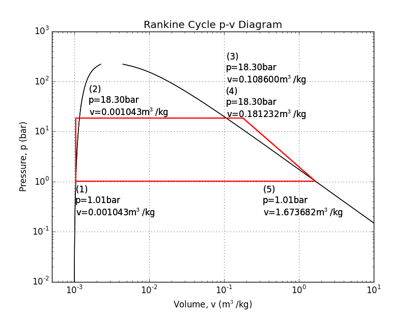

PYroMat
Examples
Phase Changes in Steam
Numpy compatibility makes it possible to quickly generate beautiful visualizations of thermodynamic properties with matplotlib.
Source|  |  |
 |
Brayton Cycle Analysis
Jet engines and gas turbines are implementations of the Brayton cycle. PYro's inverse properties like T_s() and T_h() make it easy to automate cycle analysis. In this example, we've performed a step-by-step example of a gas turbine cycle analysis.
Source

Rankine Cycle Analysis
What could be a more classic example of the power of thermodynamics than a steam engine? Today, the Rankine cycle is still essential to nuclear, coal, and integrated gas turbine combined cycle power plants. This example uses a boiler and superheater to bring the turbine outlet to saturated conditions.
Source 